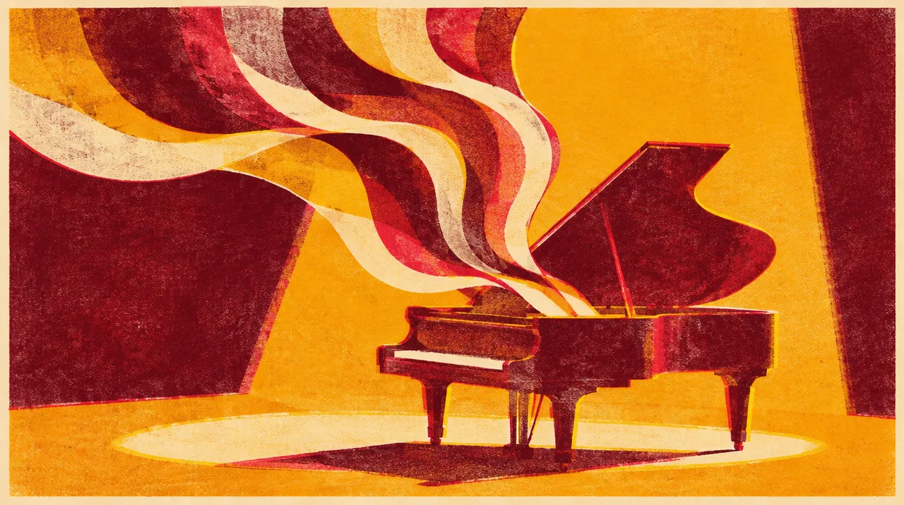

MUSIC · DEC 19 · Inglewood
STEVIE WONDER
Songs that have already lived whole lives with me.
Some songs grow older with us. And somehow stay new.
87days out
- When
- Sat Dec 19, 2026
- Where
- Intuit Dome, Inglewood · Directions
- Light
- After dark
In the mix
Just me, at my own pace.
A little space to feel everything, at my own pace.
Dig into the sound and story
4 short chapters. Open the ones that call to you.
THE ALBUMA life larger than two sides.
Songs in the Key of Life originally arrived as two LPs plus a four-track seven-inch disc: 21 songs in all. Its scale is part of its invitation. There is room for celebration, tenderness, history and questions that do not resolve into one mood.
THE MACHINE AND THE HEARTNew technology, deeply human music.
Motown’s account points to the Yamaha Electrone synthesizer and recording across four studios. The synthesizer is part of this story too. Electronic sound and human warmth have never had to live in separate rooms.
MY HISTORYDecember 18, 2021.
I was at a Stevie Wonder concert that December, describing the performance as genius while it was happening. That reaction is the part I want to preserve: the music still surprising me in the room.
THE NEXT CHAPTERA night I am keeping for myself.
December 19 is an intentional solo journey. This return does not need to repeat 2021 to matter. It can meet me where I am now.
Before we go
Artist recordings open on their own players. Not a promised setlist.
Swipe the picture, or use the arrow keys, for the next night.